Orchestrate the Claim Approval Process
Learn what Maestro BPMN is and why it matters, then create the flow and import the Insurance Claim Approval Process diagram.
Concepts
What's Maestro BPMN?
Maestro is UiPath's orchestration platform for coordinating humans, robots, and AI agents across long-running business processes. BPMN (Business Process Model and Notation) is one of two ways to design a Maestro process — a visual canvas using the same standard notation process analysts have used for years: start/end events, tasks, gateways, and sequence flows. Where a conversational agent handles one interaction and a coded agent handles one calculation, a BPMN process ties many steps — agents, humans, and system actions — together into a single process with a clear beginning, a clear end, and a visual record of every path in between.
Why Maestro?
Real business processes rarely live inside a single agent. An insurance claim needs a fraud check, a human sign-off, a settlement calculation, and a notification back to the customer — each potentially owned by a different system or person, running at a different pace. Maestro exists to coordinate exactly that: long-running, multi-actor processes that need to be visible, auditable, and resilient to the fact that a human reviewer might not respond for hours.
Visual, auditable flow
Every step, decision, and handoff is drawn on the canvas — easy to review, easy to explain to auditors.
Humans and agents together
Mix agent tasks, RPA connectors, GenAI activities, and human review steps in one process.
Built for long-running work
A process can pause for hours or days waiting on a human, then resume exactly where it left off.
Pillars of a Maestro BPMN Process
Start & End Events
Every process begins with a trigger — here, a Data Fabric entity creation — and ends at a single defined end event.
Tasks
Individual units of work: an agent call, a connector action, a GenAI activity, or a human task.
Gateways
Decision points that branch the flow — like the Reviewer Action Gateway routing to Approve or Reject.
Human-in-the-loop (HITL)
Explicit steps where a person reviews and acts before the process continues.
Set Up the Process
What you'll build
You'll design the Insurance Claim Approval Process end to end: it starts the moment a new claim record is created in Data Fabric, runs a Fraud Detection Agent, downloads the supporting document, and routes the claim to a supervisor for validation. Once notified, a Reviewer Action Gateway splits the flow into two paths — Approve, which invokes the Settlement Coded Agent and drafts an approval email with GenAI, or Reject, which drafts a rejection email instead — both of which converge back into a single Gmail send step and a shared end event.
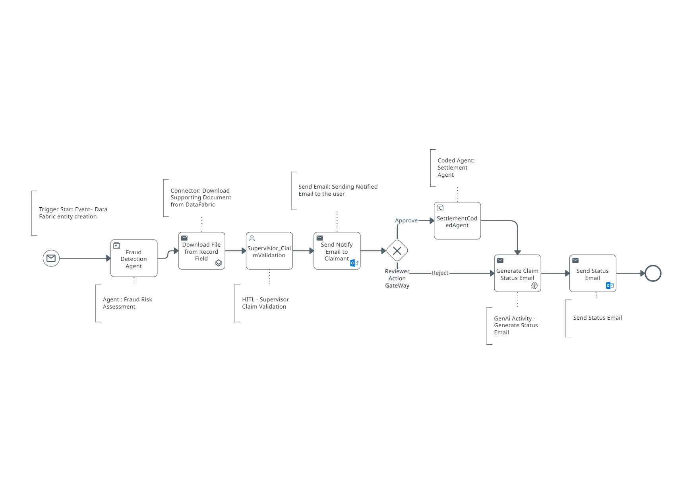
Create the Maestro BPMN process
From the "Start building" dialog in UiPath Studio Web, choose Maestro BPMN to design and build a business process on a BPMN canvas — as opposed to Maestro Flow, Agent, or RPA Workflow.

Name the solution and the Maestro process following the same naming convention you used in Module 1 — for example, reuse your existing Insurance Claim Approval Process (YourName) solution folder, and name the BPMN process something identifiable, such as Insurance Claim Approval Process.
Import the BPMN file
If you already have a .bpmn file for the Insurance Claim Approval Process — for example, one exported from another tool or provided by your instructor — you can import it directly instead of building the diagram from scratch. Don't have one handy? Download the ready-made file below and use it to follow along.
In the Explorer panel, right-click your Maestro BPMN item and choose Add to project, then select Import BPMN.
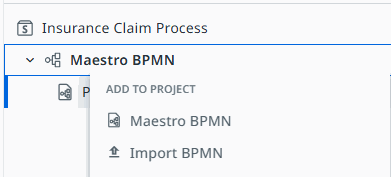
This opens the Import BPMN dialog, where you can drop in — or choose — a .bpmn file exported from any BPMN 2.0-compatible tool.
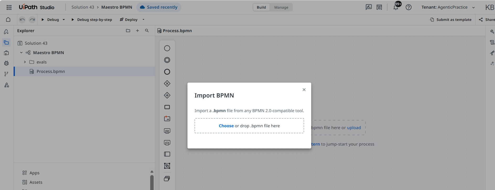
.bpmn file to import, you can build the same diagram manually on the canvas using the image above as your reference — start with the Trigger Start Event and work left to right..bpmn file (or built it manually on the canvas).Test and publish the process
Before wiring up triggers and variables, confirm the imported diagram actually runs. On the process canvas, use the Debug or Debug step-by-step controls in the toolbar to run the process end to end, and switch between the Build, Evaluate, and Preview tabs at the bottom of the canvas to inspect the diagram, run evaluation sets against it, and preview how it will look once live.
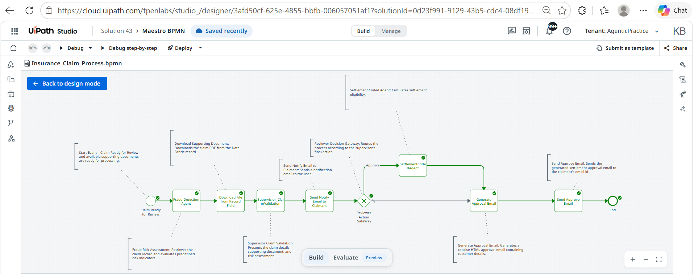
Once the process debugs cleanly, use the Deploy menu in the toolbar to publish it — the same Publish-vs-Deploy distinction from Module 1 applies here: Publish pushes the package to a feed, while Deploy also creates a running deployment in one step. You'll need a published, deployed process before you can attach a trigger to it in the next step.
Start Event
With the process imported, tested, and published, the next job is to make it actually start on its own — the moment a new claim is ready for review. That's an event trigger registered against the process, plus a start event configured to listen for the right Data Fabric record changes.
Create the trigger
From your automation's Triggers → Event Triggers page, click Add Event Trigger. Under General details, set Select connector to UiPath Data Fabric, choose your Connection (for example, the Shared Data Fabric Connection [default]), and set Event to Record Created — the same "new claim record" signal used throughout this workshop.
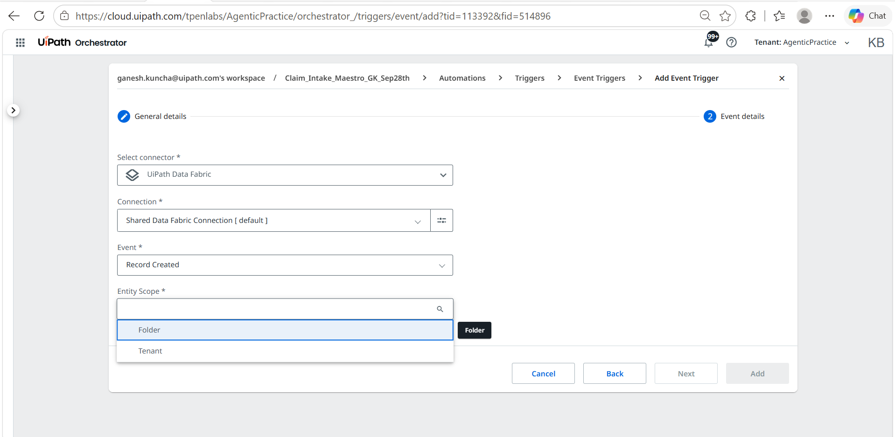
Under Entity Scope, choose how broadly the trigger can see entities: Folder scopes it to entities available in this workspace folder, while Tenant makes entities configured at the tenant level selectable too. For this workshop you must select Tenant — the shared Data Fabric entity the workshop uses lives at the tenant level, so the trigger can't see it under Folder. Click Next to move to Event details, where you'll pick the specific entity (for example, IntakeClaimEntity) and any filter conditions, then click Add to save the trigger.
Configure the Start Event
Back in the process, select the Claim Ready for Review start event on the canvas and open its Properties → Implementation panel. Set Action to Wait for connector and Select activity to Record Updated, choose the shared UiPath Data Fabric connection, set Entity Scope to Tenant, and pick IntakeClaimEntity as the Entity.
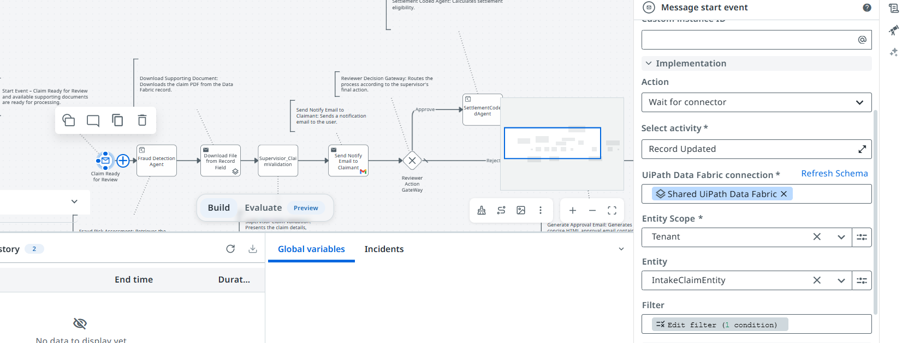
Next, click Edit filter under Filter and add a condition so the process only starts for claims that are actually ready for a decision: set the field to DecisionInput, the operator to Equals, and the value to READY_FOR_REVIEW, keeping the match type on All (AND). Click Save.
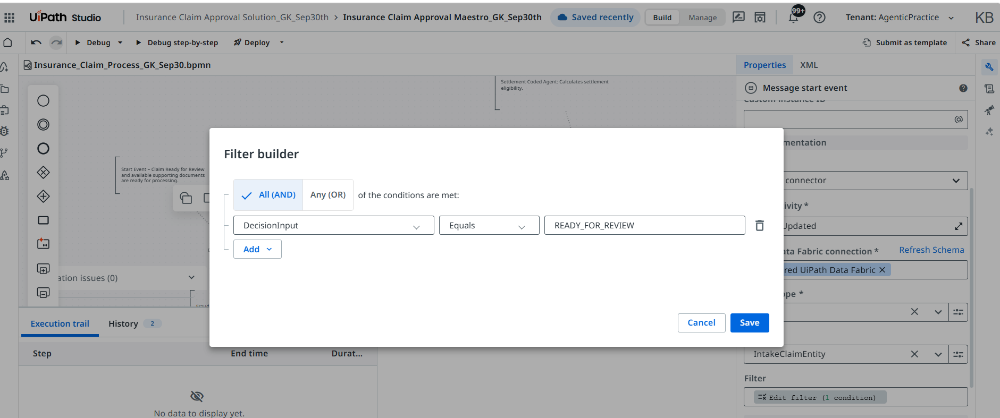
Fraud Detection Agent
Right after the Start Event, the process needs to actually call the Fraud Detection Agent — the autonomous agent you built in Module 3 — before anything else happens to the claim.
Add the Fraud Detection Agent step
Add a Service task to the canvas right after the Trigger Start Event, and connect the two. Open its Implementation panel and set Action to Start and wait for agent — this pauses the process until the agent finishes running and returns its full output.
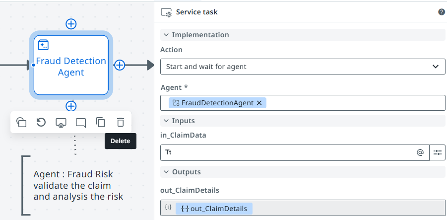
For Agent, select FraudDetectionAgent — the exact agent you built in Module 3. Under Inputs, map in_ClaimData to the claim record provided by the Start Event (its response output) — the agent expects the complete object, not just the claim ID, since it no longer looks the record up itself. Under Outputs, map each of the agent's output objects — out_ClaimDetails, out_FraudAnalysis, out_SuggestedResponse, and out_Status — to process variables so the rest of the flow (routing, notifications, and the supervisor review) can read the agent's verdict.
Retrieve the Document
Once the Fraud Detection Agent has run, the process needs the claim's supporting document before anyone can act on it. Add a connector activity right after the agent step that pulls the file straight out of the Data Fabric record.
Download the supporting document from Data Fabric
Add a UiPath Data Fabric connector activity to the canvas and set its Action to Execute connector activity, with Select activity set to Download File from Record Field — this pulls a file straight out of a specified field on a Data Fabric entity record.
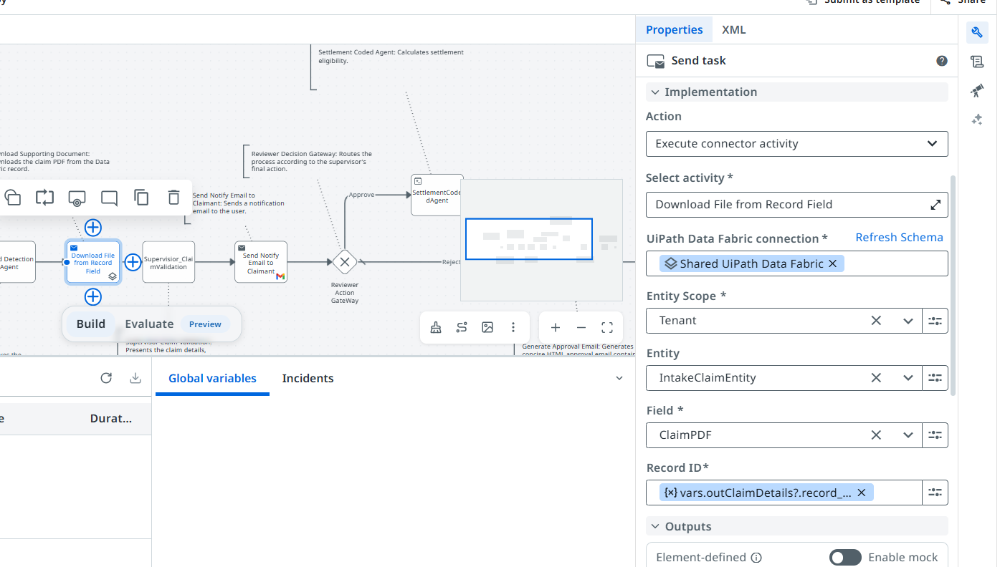
Configure the activity: set the UiPath Data Fabric connection to your shared connection (for example, Shared UiPath Data Fabric), Entity Scope to Tenant, the Entity to your claim entity (for example, IntakeClaimEntity), and the Field to the entity field that stores the file (for example, ClaimPDF). For Record ID, use the record ID returned by the Fraud Detection Agent — the expression vars.outClaimDetails?.record_id — so the activity downloads the file for the correct record.
vars.outClaimDetails?.record_id.Human-in-the-Loop Review
With the document in hand, the process hands off to a person: a supervisor needs to look at the claim and its supporting document before anything is approved or rejected. This is where an Action App task brings a human explicitly into the flow.
Add the Supervisor Claim Validation HITL task
Add a human-in-the-loop task to the canvas and set its Action to Create action app task. For Action, choose the Action App you want the supervisor to work in — for example, Supervisor_ClaimValidation-App — and give the task a clear Task title, such as Claim_Process.
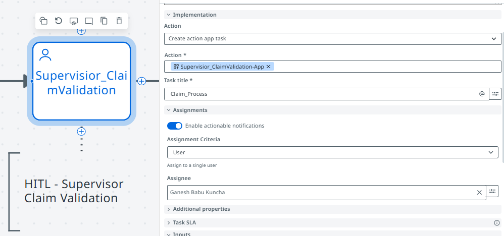
Under Assignments, turn on Enable actionable notifications so the reviewer is notified directly, set Assignment Criteria to User, and set Assignee to the supervisor who should review the claim. Once assigned, the process pauses here until that person approves or rejects the claim in the app.
Build the Action App
The HITL task you configured in the previous step references an Action App named Supervisor_ClaimValidation-App, which needs to be built before that task can run. In UiPath, an Action App (also called an Escalation app when created this way) is a low-code app that brings a person into an otherwise automated process: it's built with the same low-code Apps designer, but instead of standing alone, it's backed by a task in Action Center. When a workflow, agent, or Maestro process needs a human decision, it creates a task; the assigned person opens that task — as this app — reviews whatever context was passed in, and submits one of a fixed set of outcomes (like Approve or Reject). That decision, plus anything else they entered, flows straight back into the process, which resumes automatically.
Create the Escalation app
From your solution in Studio Web, use + → Add project to solution and choose Escalation app from the list (alongside options like Agent, RPA Workflow, and App). Name it to match what you referenced in the HITL task — for example, Supervisor_ClaimValidation-App.
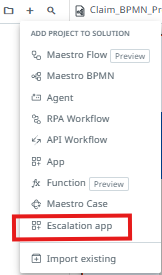
Define the Action Schema
Every Action App is built around an Action Schema — it defines the structure of data exchanged between the app and the calling workflow or agent, so the two sides agree on exactly what gets passed in, what the reviewer can edit, what gets returned, and what decisions are possible. It has four parts:
- Outcomes — the decisions available to the reviewer:
Approve,Reject. - Input Properties — read-only context the app displays, populated by the Fraud Detection Agent and the claim record:
ClaimId,CustomerName,PolicyNumber,IncidentType,ClaimAmount(System.Decimal),FraudRiskScore(System.Int32),FraudRiskLevel,FraudVerdict,FraudIndicators,RecommendedAction,SuggestedEmailBody, andin_ClaimRecordDocument(a File — the supporting document from Data Fabric). - Input/Output Properties — fields that start pre-filled but the reviewer can edit before submitting:
io_ApprovedEmailBody(the suggested approval email, editable before it's sent). - Output Properties — new data the reviewer provides:
out_ReviewerComments(optional free-text comments on their decision).
What the reviewer sees in Action Center
Lay out a "Claim Processing" screen and bind each field to its matching Action Schema property: ClaimId, CustomerName, PolicyNumber, IncidentType, and ClaimAmount on the left, and the fraud analysis fields — FraudRiskScore, FraudRiskLevel, FraudVerdict, and FraudIndicators — alongside RecommendedAction on the right, so the reviewer sees the full picture the Fraud Detection Agent produced. Below that, place a Claim Document View control bound to in_ClaimRecordDocument next to an editable Approved email body field bound to io_ApprovedEmailBody, then a Reviewer comments box bound to out_ReviewerComments, and finally the Approve/Reject buttons wired to the Outcomes you defined. Once published, this same layout is what the assigned reviewer opens as their task in Action Center.
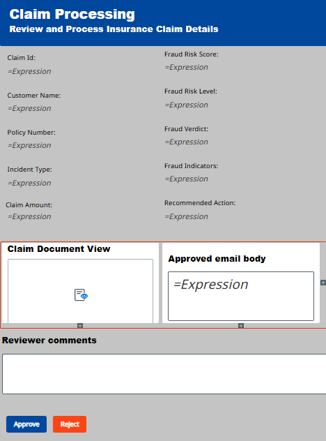
Settlement Coded Agent
Once the supervisor approves the claim, the process needs to calculate what to actually pay out. That's the job of the Settlement Coded Agent you'll build in Module 4 — a pure-Python, deterministic agent with no LLM involved, matching the "SettlementCodedAgent" step on the Approve branch of the BPMN diagram.
Add the Settlement Coded Agent step
On the Approve branch coming out of the Reviewer Action Gateway, add another Service task and name it Settlement CodedAgent. Open its Implementation panel and set Action to Start and wait for agent, the same pattern used for the Fraud Detection Agent earlier in this flow.
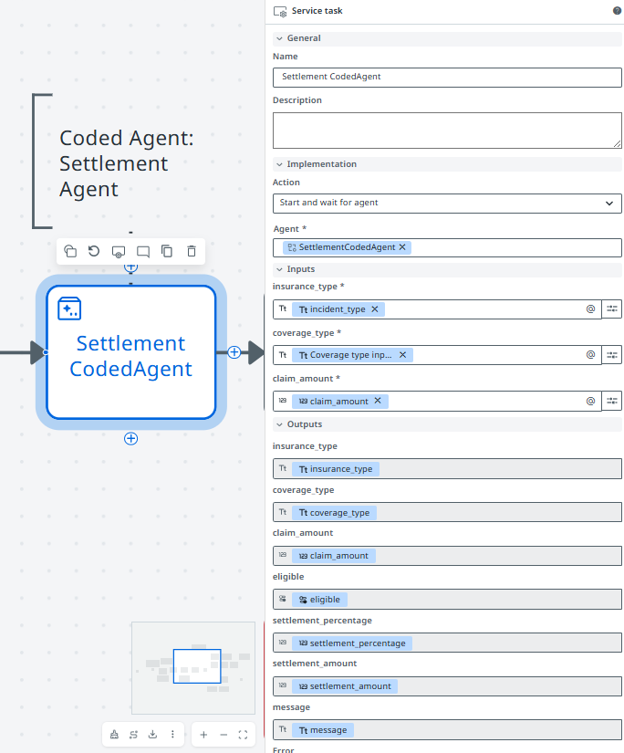
For Agent, select SettlementCodedAgent. Under Inputs, map insurance_type, coverage_type, and claim_amount to the corresponding claim fields carried through the process. Under Outputs, map eligible, settlement_percentage, settlement_amount, message, and Error to process variables — the eligibility and settlement figures the agent calculates, which the approval email and Gmail send step further down the flow will use.
GenAI Activities
The last stretch of the process branches on the supervisor's decision, then uses GenAI to draft one status email covering either outcome. Rather than building separate GenAI activities for Approve and Reject, this section uses a single one, driven by vars.action.
Configure the Reviewer Action Gateway
Right after the Human-in-the-Loop Review step, add a Gateway node named Reviewer Action Gateway and connect it to two outgoing paths: an Approve path and a Reject path, each guarded by a condition on vars.action — for example vars.action == "Approve" and vars.action == "Reject". The Approve path leads into the Settlement Coded Agent step from Step 9; the Reject path skips straight ahead. Both paths converge again right before the email step below.
Generate the status email with GenAI
UiPath GenAI Activities is a family of ready-made connector activities backed by a large language model — instead of writing a prompt-calling agent yourself, you drop in an activity like Generate Email, wire up its inputs, and it returns generated text you can use directly in the process. It's the right tool here because this step doesn't need memory, tools, or multi-turn reasoning — just one well-specified piece of text generated from data already sitting in process variables.
Where both the Approve and Reject paths converge, add a single connector activity and name it Generate Claim Status Email. Set Action to Execute connector activity, Select activity to Generate Email, and UiPath GenAI Activities connection to your UiPath GenAI Activities connection, with a Model name such as gpt-5.1-2025-11-13.
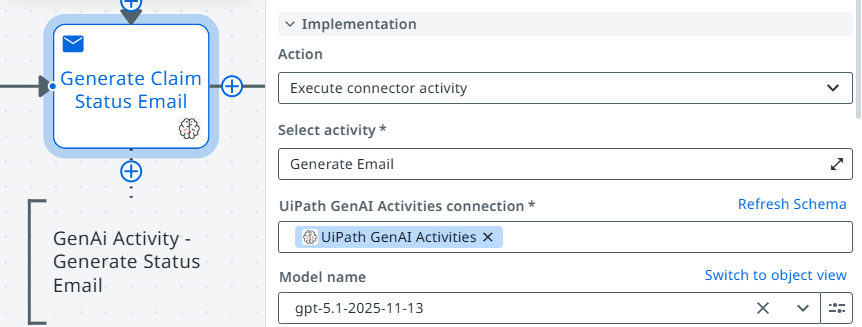
This single activity replaces what would otherwise be two separate GenAI activities — one for approval emails, one for rejection emails. Instead, both the Email content and the Example fields use an expression that branches on vars.action == "Approve", so the same activity produces the right email either way.
[
"<p>Dear ", vars.outClaimDetails.customer_name, ",</p>", "\n", "\n",
"Customer name: ", vars.outClaimDetails.customer_name, "\n",
"Claim ID: ", vars.outClaimDetails.claim_id, "\n",
"Policy number: ", vars.outClaimDetails.policy_number, "\n",
"Decision: ", vars.action, "\n",
vars.action == "Approve"
? [
"Original claim amount: ", vars.outClaimDetails.claim_amount, "\n",
"Settlement percentage: ", vars.settlementPercentage, "\n",
"Settlement amount: ", vars.settlementAmount, "\n",
"Requirements:", "\n",
"- Address the customer using the supplied customer name.", "\n",
"- State that the claim was approved following supervisor review.", "\n",
"- Include the exact claim ID and policy number.", "\n",
"- Show the original claim amount, settlement percentage, and settlement amount.", "\n",
"- Format monetary values with two decimal places.", "\n",
"- Use an HTML bullet list for the settlement details.", "\n",
"- Do not calculate or change any supplied value.", "\n",
"- Do not promise a payment date.", "\n",
"- Do not mention AI, agents, fraud analysis, or internal processing.", "\n",
"- End with Insurance Claims Department and Helpline: 1800-CLAIMS."
].join('')
: [
"Supervisor comments: ", vars.outReviewerComments, "\n",
"Internal review indicators: ", vars.outFraudAnalysis.fraud_indicators, "\n",
"Recommended action: ", vars.outFraudAnalysis.recommended_action, "\n",
"Requirements:", "\n",
"- Draft a professional, empathetic decline notice.", "\n",
"- Include the exact claim ID and policy number.", "\n",
"- Explain what documents or information the customer should resubmit.", "\n",
"- Present required documents as an HTML bullet list.", "\n",
"- State that the customer must include the claim ID with the resubmission.", "\n",
"- State that resubmission allows further review but does not guarantee approval.", "\n",
"- Do not include settlement values.", "\n",
"- Do not mention AI, agents, fraud analysis, or internal processing.", "\n",
"- End with Insurance Claims Department and Helpline: 1800-CLAIMS."
].join('')
].join('')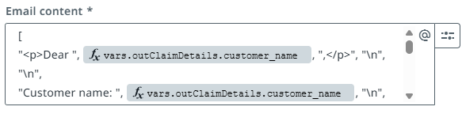
vars.action == "Approve"
? [
"<p>Dear Customer,</p>", "\n", "\n",
"<p>Your insurance claim has been approved following review.</p>", "\n", "\n",
"<p><strong>Settlement details:</strong></p>", "\n", "\n",
"<ul>", "\n",
" <li><strong>Claim ID:</strong> CLM-EXAMPLE</li>", "\n",
" <li><strong>Policy number:</strong> POL-EXAMPLE</li>", "\n",
" <li><strong>Original claim amount:</strong> $1,000.00</li>", "\n",
" <li><strong>Settlement percentage:</strong> 90%</li>", "\n",
" <li><strong>Settlement amount:</strong> $900.00</li>", "\n",
"</ul>", "\n", "\n",
"<p>Regards,<br>", "\n",
"Claims Processing Team<br>", "\n",
"Insurance Claims Department<br>", "\n",
"Helpline: 1800-CLAIMS</p>"
].join('')
: [
"<p>Dear Customer,</p>", "\n", "\n",
"<p>We have completed the review of your insurance claim. At this time, we are unable to approve the claim as currently submitted because the available information does not establish coverage for the complete amount claimed.</p>", "\n", "\n",
"<p><strong>Claim details:</strong></p>", "\n", "\n",
"<ul>", "\n",
" <li><strong>Claim ID:</strong> CLM-EXAMPLE</li>", "\n",
" <li><strong>Policy number:</strong> POL-EXAMPLE</li>", "\n",
"</ul>", "\n", "\n",
"<p>For further review, please resubmit the following:</p>", "\n", "\n",
"<ul>", "\n",
" <li>Repair receipts, estimates, or other supporting cost documentation</li>", "\n",
" <li>Any additional incident documentation requested by the claims team</li>", "\n",
"</ul>", "\n", "\n",
"<p>Please include the claim ID with your resubmission. Additional information may be submitted for further review; however, resubmission does not guarantee approval.</p>", "\n", "\n",
"<p>Regards,<br>", "\n",
"Claims Processing Team<br>", "\n",
"Insurance Claims Department<br>", "\n",
"Helpline: 1800-CLAIMS</p>"
].join('')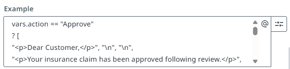
Email Process
With the status email generated, the last piece of the process sends it to the claimant and brings both the Approve and Reject paths to a close at one shared end event.
Send the status email and end the process
Add a Gmail connector activity right after the GenAI step, named Send Status Email. Set Action to Execute connector activity and Select activity to Send Email, with Gmail connection set to your shared connection (for example, Shared Gmail Connection). Leave Save as draft set to False so the email actually sends.
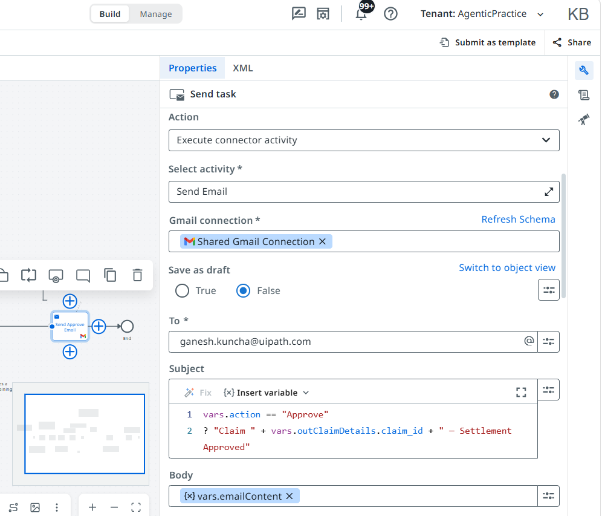
Bind the email body to the GenAI activity's output from the previous step. For Subject, use the same branching pattern so one activity covers both outcomes:
vars.action == "Approve"
? "Claim " + vars.outClaimDetails.claim_id + " — Settlement Approved"
: "Claim " + vars.outClaimDetails.claim_id + " — Review Decision and Next Steps"Connect Send Status Email straight to a single shared End Event. With that, both the Approve and Reject paths — fraud check, human review, optional settlement calculation, generated email, and notification — run through the same two activities and finish at one defined end of the process.